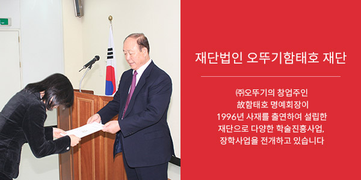
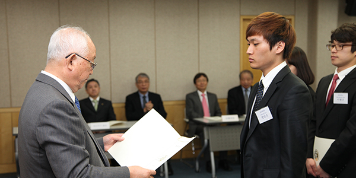
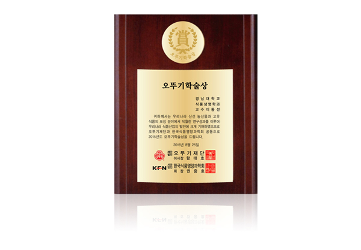
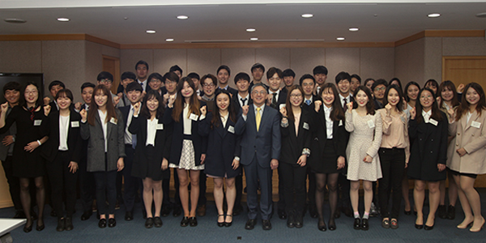
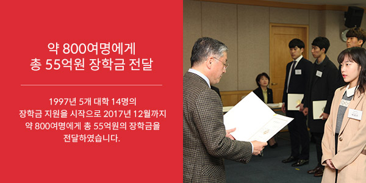

지속가능경영
- 사회공헌
- 식품을 통해 인류의 건강과 행복을 추구해오고 있는 ㈜오뚜기는 기업의 사회적 기여를 성실히 실천해 오고 있습니다.
교육장학



- 재단법인 오뚜기함태호 재단
- 재단법인 오뚜기함태호 재단은 ㈜오뚜기의 창업주인 故함태호 명예회장이 1996년 사재를 출연하여 설립한 재단으로 다양한 학술진흥사업, 장학사업을 전개하고 있습니다. 함태호 명예회장은 다른 분야에 비해 소외 받는 식품분야의 발전을 위해 조금이라도 기여했으면 좋겠다는 평소의 신념과 기업경영을 통한 기업이윤의 사회환원 측면에서 ‘국가와 사회 발전에 이바지할 유능한 인재 양성을 통해 국민복지 향상에 기여하는 것은 기업의 또 다른 책무’라는 소신을 갖고 오뚜기함태호재단을 설립하였습니다.
- 1997년 5개 대학 14명의 장학금 지원을 시작으로 2018년 12월까지 900여명에게 총 60억원의 장학금을 전달하였습니다.
- 2009년에는 오뚜기 학술상을 제정, 연 2회 한국식품과학회와 한국식품영양과학회를 통해 식품산업 발전과 인류식생활 향상에 기여한 공로가 큰 식품관련 교수 2명을 선정하여 상금 6천만원을 시상해오고 있으며, 2018년 12월까지 총 19명에게 시상하였습니다. 또한 2013년부터 식품분야를 연구하는 연구자에게도 연구비를 지원하여 2018년 12월까지 총 47명에게 30억원의 연구비를 지원하였습니다.

